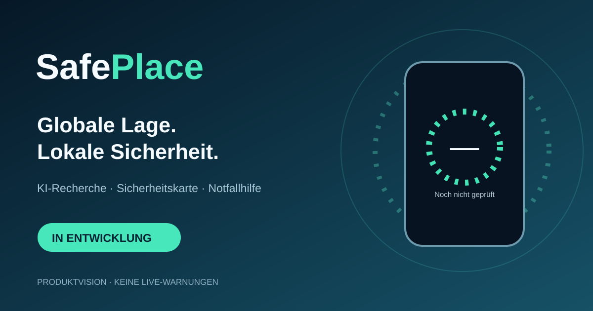

IN ENTWICKLUNG
SafePlace.
Globale Lage. Lokale Sicherheit.
Konzept einer internationalen Android-App für KI-gestützte Sicherheitsanalysen, Weltkarte, standortbezogene Bewertung, Notruf und Offline-Hilfe.

Die Vision
🌍 Weltweite Gefahrenkarte
◉ Sieben KI-Sicherheitsringe
🧠 Transparente Recherche und Prognosen
☎ Notruf und lokale Hilfe
▣ Offline-Karten und Länderpakete
🔒 Datenschutzorientierte Nutzung
Wichtiger Hinweis
SafePlace ist ein vorläufiger Name, Markenrechte noch zu prüfen. © 2026, Rechte vorbehalten.Produktvision, noch keine fertige App. Keine Live-Warnungen, kein Download im Google Play Store, keine offiziellen Notfallinformationen.